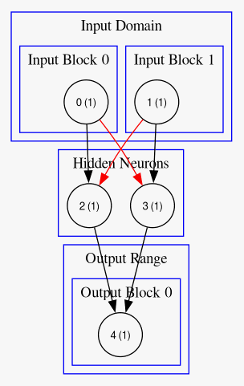

Readme
Table of Contents
1. IONS
IONS is an Integer Only Neuromorphic System. It is being built as a toy example to learn both neuromorphic system simulation and evolutionary optimization techniques.
Though IONS is currently written in V there is no requirement that simulators/runtimes be written in V. As you will see the network definitions are fairly simple and should port will to any language. Up next on the roadmap is a lightweight single binary simulator written in C to support development of applications with a neuromorphic core.
1.1. Building IONS
The networks that IONS produces are simulator agnostic, but there currently exists only one simulator. That simulator is written in V, and is bundled together with visualization, training, and testing tools.
To build and run IONS we must first install V
sudo apt install git build-essential make git clone https://github.com/vlang/v cd v make sudo ./v symlink v up
Then we can build the project from the root directory
v .
As long as the above command executes successfully you’re ready to go!
1.2. Using IONS
Usage: neuromorphic [flags] [commands] neuromorphic runtime Flags: -help Prints help information. -man Prints the auto-generated manpage. Commands: visualize Pretty Print the Network run Run the network using stdin/stdout train_classification Train a network based upon a given dataset test_classification Test a network based upon a given dataset help Prints help information. man Prints the auto-generated manpage.
Running with no arguments shows us the help message. As we can see there are currently 4 supported functions of IONS.
1.2.1. Visualize
Visualize takes in a network json file and prints a representation of it directly to the terminal. This requires libsixel and by extension the program img2sixel, make sure both are installed on your system, and that your terminal supports sixel graphics if you want to see the output.

1.2.2. Run
Run allows a user to test a network manually through the same interface as the network was trained on.
$ ./neuromorphic run -json networks/xor.json Inputs (2): 0 0⏎ Outputs (1): [''] Inputs (2): 0 1⏎ Outputs (1): ['output'] Inputs (2): 1 0⏎ Outputs (1): ['output'] Inputs (2): 1 1⏎ Outputs (1): ['']
The user provides one input for each dimension in the input space, the network is run for its full end_to_end_time (described later), and each output is displayed.
1.2.3. Train Classification
IONS provides the ability to easily train a network for classification tasks. The user provides a labeled dataset, the number of input and output dimensions, and IONS does the rest.
> [!NOTE] > This feature is under active development, currently IONS can generate an initial population of 100 randomly generated networks, ranging from sparsly connected input to output networks, densly connect input to output networks, and networks with added hidden neurons.
After testing an initial population of 100 networks the top 5 will be chosen to move on to the next round. These 5 networks will reproduce with each other, producing children, and they can also be passed along unchange (or with mutations) into the next generation. To keep diversity up 5 randomly generated networks will be included in each subsequent population.
The final output of training will be the top 5 networks from the last generation that ran.
1.2.4. Test Classification
Once a network has been trained (or written by hand) it can be tested by either providing the same datset that was given in training, or by provided a different subset of the same data to test the performance on data the network has never seen.
$ ./neuromorphic test_classification -n networks/quadrents_zero.json -d labeled_data/quadrents.json⏎ Network passed 4/4 tests
1.3. Network Architecture
Networks are defined in json files which describe some basic meta-information about the network, along with each neuron and synapse.
1.3.1. Meta-information
"min_synapse_value": -1, "max_synapse_value": 2, "min_threshold_value": -1, "max_threshold_value": 1, "max_synapse_count": 5, "max_neuron_count": 5, "max_synapse_delay": 1, "end_to_end_time": 2,
Most of the values are self-explanatory, the only new concept here is end_to_end_time which just states how long a network should be run to process one set of input.
1.3.2. Input Domain
"input_domain": [ { "min_value": 1, "max_value": 1, "input_type": "spike", "input_prop": 1, "neurons": ["0"] }, { "min_value": 1, "max_value": 1, "input_type": "spike", "input_prop": 1, "neurons": ["1"] } ]
A networks Input Domain describes its interactions with the outside world. Each object in the input domain represent one “block” of input, though that one block may contain >= 1 neuron.
Currently each input_type has an input_prop but these will likely be broken out into distinct object types in the future.
| Input Type | Characteristics | # Neurons |
|---|---|---|
| Buckets | The provided input range is divided into n buckets, each of size range/n | >= 1 |
| Timescale | The provided input range is scaled linearly over the total end_to_end_time, with larger values spiking later |
1 |
| PWM | Each input is converted to a percentage, which specifies how many spikes will occur over the given time range | 1 |
| Spike | The simplest input type, a single neuron either spikes or does not spike | 1 |
> [!WARNING] > The process for adding new input types is fairly involved. It requires source code changes (granted they are all contained within one file), so I’d like for this process to be stuck behind an interface in the future, which would also allow different properties to be specified along with an individual input unit.
{
"min_value": -1,
"max_value": 1,
"input_type": "buckets",
"input_prop": 3,
"neurons": ["negative x", "zero", "positive x"]
},
Each input unit also specifies which neurons should be associated with it, allowing for each neuron to have a descriptive name.
1.3.3. Output Range
"output_range": [ { "output_neurons": 4, "output_type": "largest_count", "neurons": ["4", "5", "6", "7"], "neuron_names": ["BL", "BR", "TR", "TL"] } ],
Similarly to inputs, the output range describes the results of the network. Each network can have 1 or more output units, each representing a specific dimension of the output space.
> [!NOTE]
> In the future the neuron_names field will be removed, instead the network will utilize the name of the neuron directly. These names can also be gathered from any labeled data that is provided while training a network to perform classification.
| Output Type | Characteristics | # Neurons |
|---|---|---|
| Largest Count | A simple voting scheme where the neuron that spikes the most wins, ties are broken “left to right” | >= 2 |
| Last to Spike | A temporal output scheme, where neurons are tracked for t timesteps, and the last to fire wins, ties are broken “right to left” | >= 2 |
| Spike | The most straight forward output unit, a single neuron is tracked once per timestep, if it spikes it will be included in the output | 1 |
> [!WARNING] > As stated above the process to add new output types is also fairly involved, through this will likely change in the future.
1.4. Labeled Data Overview
{
"input_dimension": 2,
"output_dimension": 1,
"expected_outputs": [["BL", "BR", "TL", "TR"]],
"data": [
{
"input": [-1, -1],
"output": ["BL"]
},
{
"input": [-1, 1],
"output": ["TL"]
},
{
"input": [1, -1],
"output": ["BR"]
},
{
"input": [1, 1],
"output": ["TR"]
}
]
}
For the purposes of training a classification network it is beneficial to have an easy format to provided labeled data. Builtin to IONS is the ability to handle files of the above format.
We start by specifying the dimension of both the input and output space, along with what those outputs mean to a human.
Each input is then provided, along with the expected output. IONS is then able to parse this while training a classification network to produce fitness scores for a given network.
> [!NOTE]
> All classification networks are currently trained using buckets for input and largest_count for output. In the future any combination of input and output types will be supported.
2. Graham Idea
- Negative feeback from RHS to LHS, from a subsequent layer
- Specifiy number of “layers” of hidden neurons